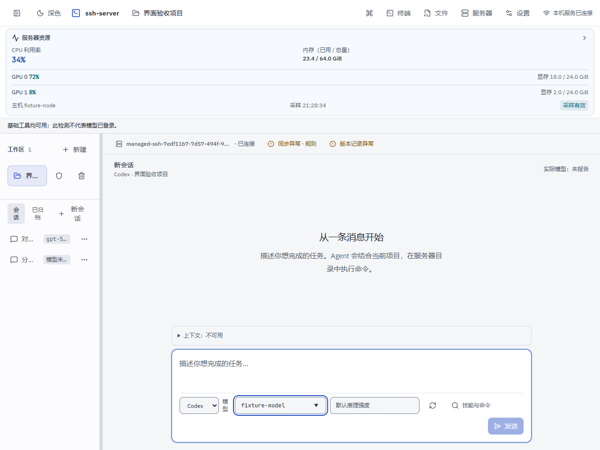

界面与流程一致性 · 实际网页截图
查看页面
主界面 · 浅色 1280
主界面 · 浅色 960
主界面 · 浅色 1920
主界面 · 深色
分类设置 · 浅色
分类设置 · 深色
创建目录选择
密码服务器保存后的引导
创建验证与重新确认
资源详情 · 浅色
资源详情 · 深色
资源过期状态
服务器文件 · 浅色选中态
服务器文件 · 深色选中态
文件右键菜单
拖动后的移动确认
文件面板 · 960
文件面板 · 1280
文件面板 · 1920
Edge 154；临时本机配置与受控 SSH。资源、会话和同步结果为合成样本，不代表真实用户服务器或模型调用。截图缩放展示，点击可查看原图。
